Fuel Suction Tube Assembly (with Pump & Gauge) (2GR-FE) Disassembly |
| 1. Remove Fuel Sender Gauge Assembly |
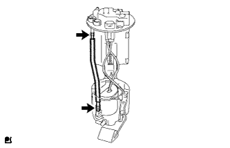 |
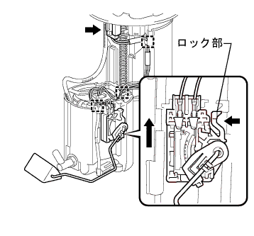 |
Disconnect the fuel sender gauge connector.
Remove the 2 harness protectors from the wire harness.
Disconnect the 3 harness clamps.
Release the lock shown in the illustration, and slide the fuel sender gauge to remove it.
| 2. Remove Fuel Pump Assembly w/ Filter |
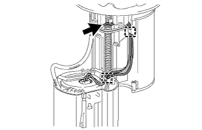 |
Disconnect the fuel pump harness connector.
Disconnect the 2 harness clamps.
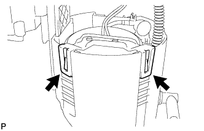 |
Using a screwdriver with its tip wrapped in protective tape, disengage the 2 claws.
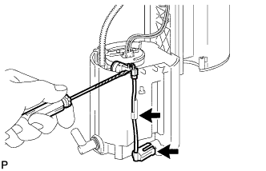 |
Using a screwdriver with its tip wrapped in protective tape, pull out the jet pump, and remove the fuel filter and fuel pump from the sub-tank.
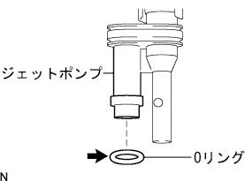 |
Remove the O-ring from the jet pump.
| 3. Remove Fuel Suction Support NO.1 |
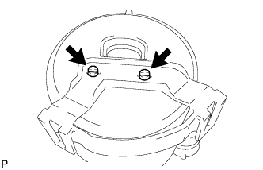 |
Using a screwdriver with its tip wrapped in protective tape, remove the fuel suction support No.1.
| 4. Remove Fuel Pump |
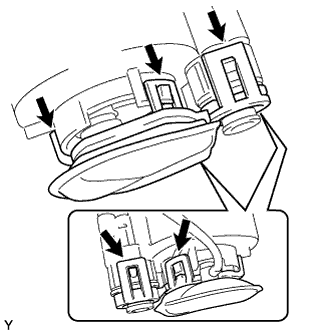 |
Using a screwdriver with its tip wrapped in protective tape, disengage the 5 claws, and remove the fuel pump filter and fuel pump from the fuel filter.
 |
Disconnect the fuel pump harness connector.
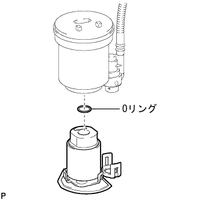 |
Remove the O-ring.
| 5. Remove Fuel Pressure Regulator Assembly |
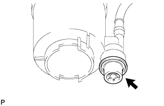 |
Using a screwdriver with its tip wrapped in protective tape, remove the pressure regulator.
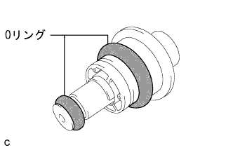 |
Remove the 2 O-rings from the fuel pressure regulator.